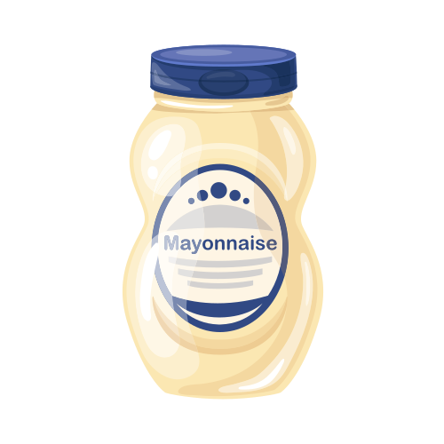
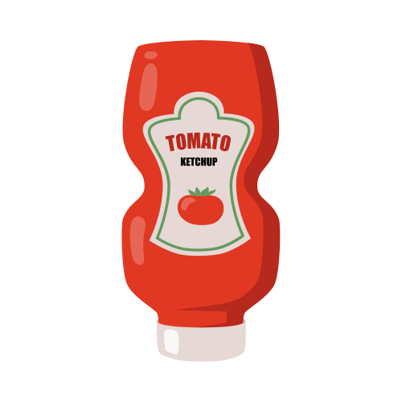

This Sweet Corn Chaat is an easy snack recipe that gets done quickly. So, perfect for days when you are actually short of time. It is fuss-free, easy to make and requires absolutely no special skills. So, most apt for bachelors as well. I have used American sweet corn kernels as it’s a common one at my home. I use it to make a lot of other dishes as well. Other basic ingredients that go in this chaat snack are onions, green chilies, lemon juice and a few ground spices. This Sweet Corn Chaat recipe is also a hit with kids. Just make sure to skip adding green chilies or red chili powder (or add either of them in a lesser quantity) as per your kid’s likings. In case you want to experiment, you can use dried mango powder or ‘amchur’ instead of or with chaat masala to bring in the tart element.
| Prep Time
15 mins |
Cook Time
5 mins |
Total Time
20 mins |
|
| Cuisine
Indian |
Course
Snacks, Starters |
Diet
Vegan |
|
| Difficulty Level
Moderate |
Recipe:

Sweet Corn
Step-by-Step Guide:
Take 5 corn cob (sweet corn), large-sized or 1 cup sweet corn kernels
Rinse 1 cup corn kernels or 1 medium size corn on cob a couple of times in was.
Add the rinsed corn kernels or corn on cob in a 2 to 3 litre stovetop pressure cooker. Also, add 1.5 cups water and ¼ teaspoon salt or add as required.
Pressure cook the corn kernels or corn on cob on medium heat for 3 to 4 whistles or tender.
Let the pressure settle down naturally in the pressure cooker. Then only remove the lid.
In a colander or strainer, strain the boiled corn kernels or corn on cob. Drain all the water and keep the cooked corn kernels aside.

Capsicum
2 Capsicum – medium-sized, finely chopped or ¼ cup

Chopped Green Chilliess
2.5 to 5 teaspoon finely chopped green chilies or 1 green chilli, finely chopped – optional

Chaat Masala Powder
5 teaspoon chaat masala powder or add as required

Red Chilli Powder
1.25 teaspoon red chili powder or cayenne pepper, add as required
Chopped Onion
5 onion – small-sized, finely chopped or ¼ cup

Chopped Coriander Leaves
5 tablespoon chopped coriander leaves
Salt
1.25 teaspoon salt or add as required

Lemon
5 or 10 teaspoons lemon juice

Mayonnaise
1 and ¼ cup veg mayonnaise

Ketchup
¼ cup and 3 teaspoon tomato ketchup
Nachos
500 grams nachos
How to make Nacho and Corn Chaat
Step 1 Mix the veggies
In a bowl, add chopped onion, green chillies, coriander leaves, mayonnaise, ketchup, chaat masala, red chilli powder and black salt. Mix well all the ingredients.
Step 2 Plate the nachos and serve
The next step is for assembling. Place nachos around the plate, add the above mixture in the middle and add boiled corn on top of the mixture. Serve immediately.
Nutrition Facts
Corn Chaat Recipe | Sweet Corn Chaat
| Amount Per Serving | |||
|---|---|---|---|
| Calories 104 | Calories from Fat 18 | ||
| % Daily Value* | |||
| Total Fat 2g | 3% | ||
| Saturated Fat 1g | 6% | ||
| Trans Fat 0.01g | |||
| Polyunsaturated Fat 1g | 6% | ||
| Sodium 1037mg | 45% | ||
| Total Carbohydrate 21g | 7% | ||
| Dietary Fiber 6g | 25% | ||
| Sugars 8g | 9% | ||
| Protein 4g | 8% | ||
| Vitamin A 61% | Vitamin B 15% | |
| Calcium 5% | Iron 11% | |
* Percent Daily Values are based on a 2,000 calorie diet. Your daily values may be higher or lower depending on your calorie needs:
| Calories: | 2,000 | 2,500 | ||
|---|---|---|---|---|
| Total Fat | Less than | 65g | 80g | |
| Saturated Fat | Less than | 20g | 25g | |
| Cholesterol | Less than | 300mg | 300 mg | |
| Sodium | Less than | 2,400mg | 2,400mg | |
| Total Carbohydrate | 300g | 375g | ||
| Dietary Fiber | 25g | 30g | ||
Calories per gram:
Fat 9 • Carbohydrate 4 • Protein 4